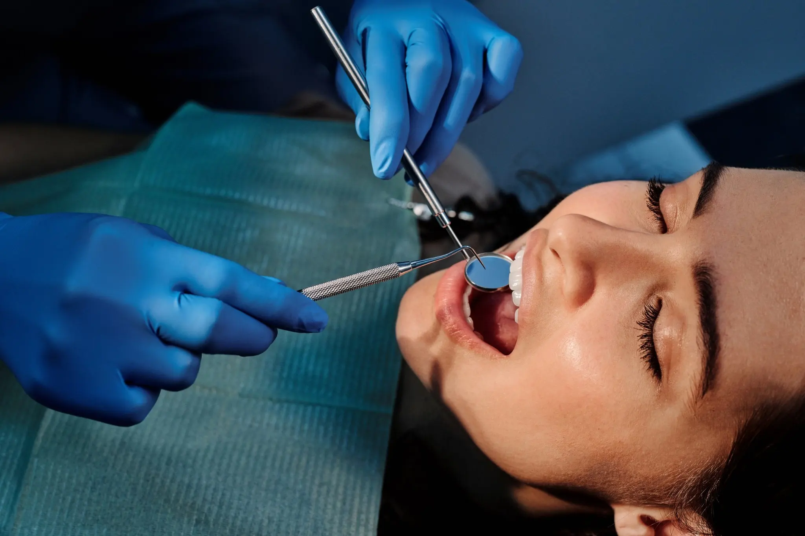
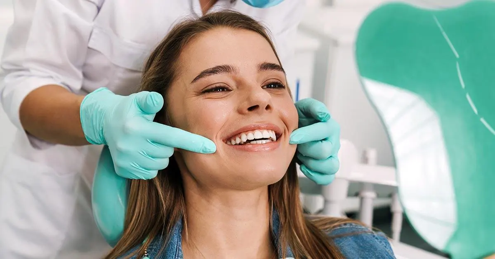
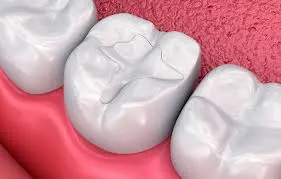
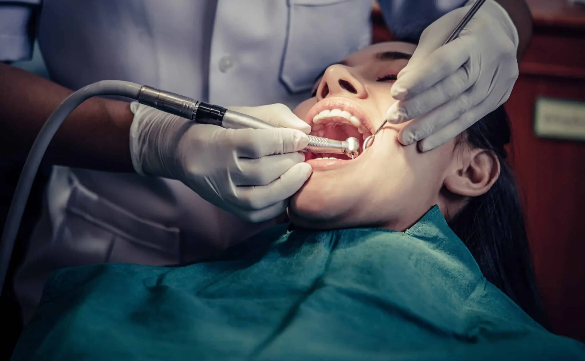
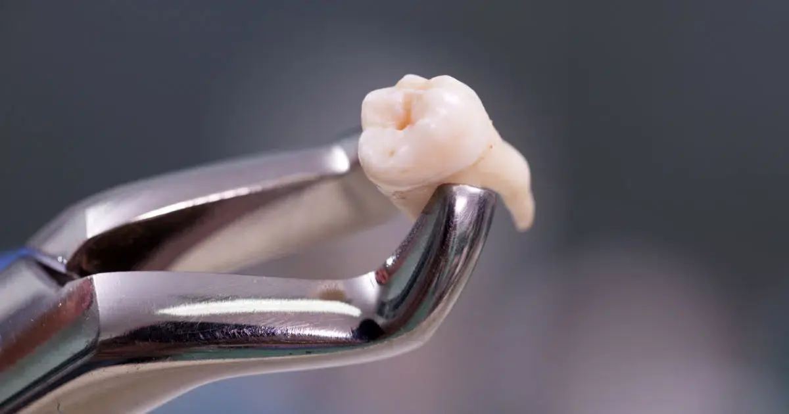

Implantes + corona
Recuperación de piezas perdidas con planificación personalizada.
Más información →Consulta nuestros tratamientos más habituales. Para recibir una valoración personalizada, consulta con la doctora o contacta con nuestra clínica.

Recuperación de piezas perdidas con planificación personalizada.
Más información →







Si necesitas un tratamiento adicional que no aparece en esta página, no dudes en consultar con nuestro equipo. Te atenderemos personalmente en nuestra clínica o llamando al 922 290 395.
Resolvemos las dudas más habituales antes de pedir cita o iniciar un tratamiento dental.
Depende del estado de tus dientes, encías, mordida y objetivos estéticos. La clínica realiza una valoración para recomendar el tratamiento más adecuado.
Sí. En algunos casos se combinan limpieza, encías, empastes, fundas, implantes o estética dental para conseguir un resultado funcional y natural.
Sí. Se explican las opciones, duración orientativa, cuidados y presupuesto personalizado antes de iniciar el procedimiento.
Sí. Puedes llamar al 922 290 395 y solicitar una valoración personalizada en la clínica de tenerife.